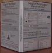
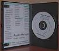

|  |  |
Report Manager Standard edition has this additional features.
| Boxed CD-ROM |
| Additional report samples using Firebird SQL database |
| Full Documentation |
|
Borland Database Engine (Windows) Installation with database drivers
|
| Firebird SQL Database |
| All the needed files to install Report Manager in Linux and Microsoft Windows |